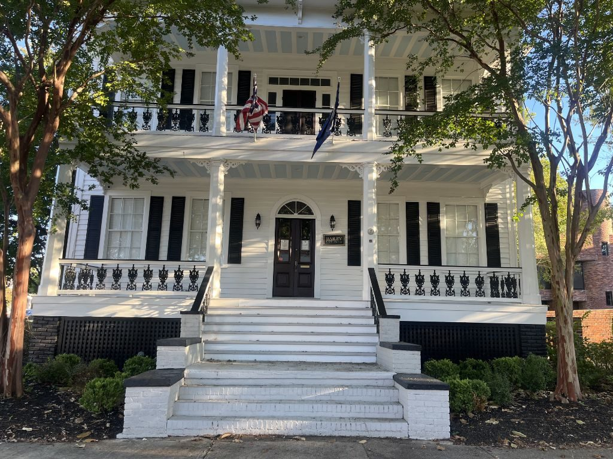
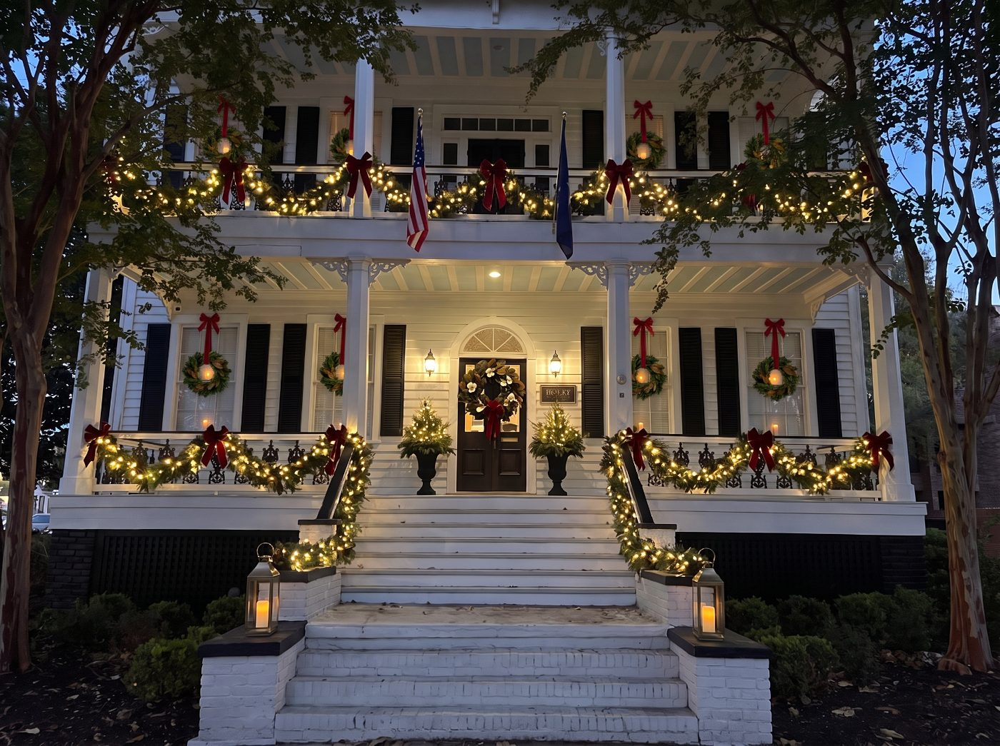
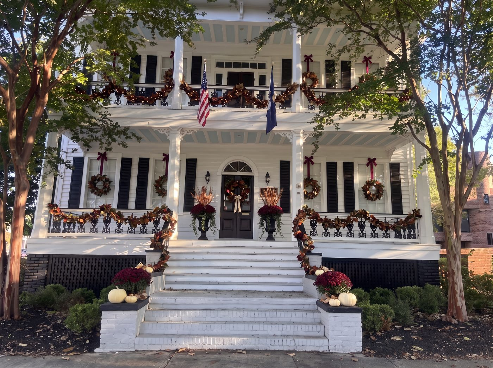
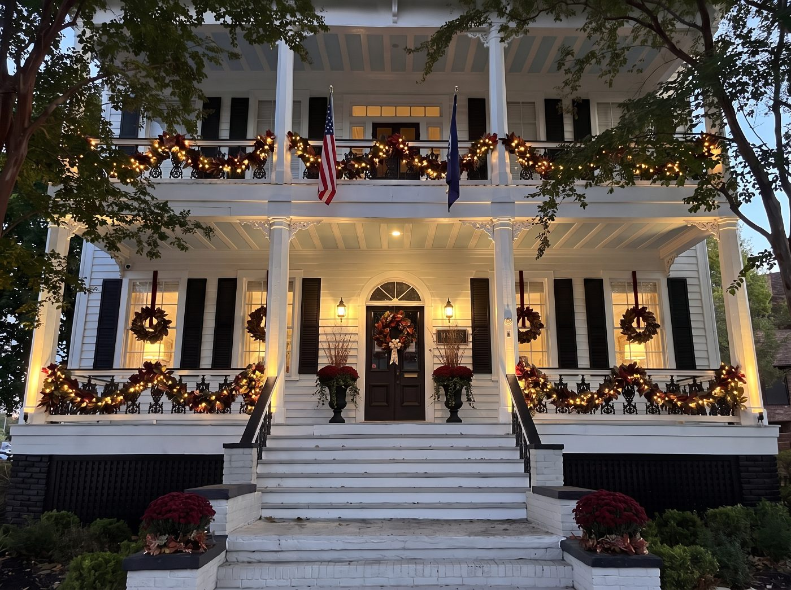
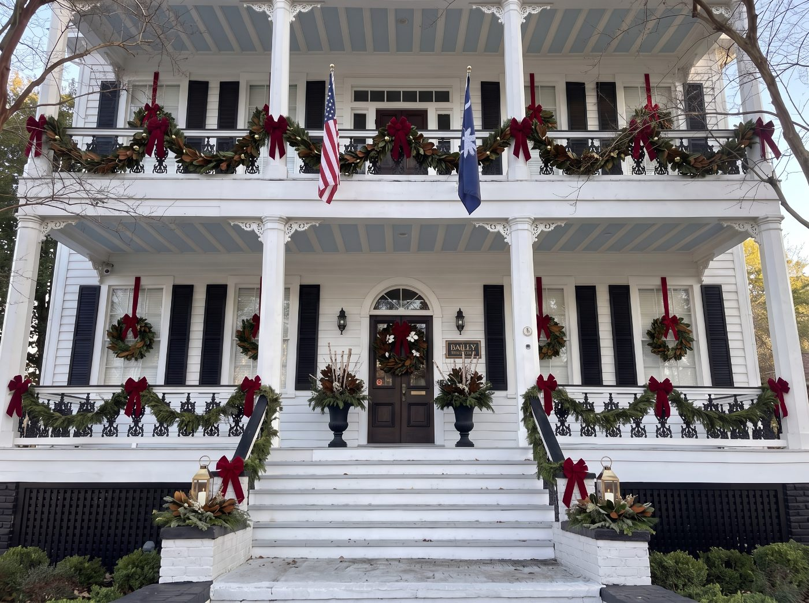

Essential
The Front Door
- Door wreath
- A pair of urns
- Lit handrail garland
- Pillar arrangements
Bailey Law Firm occupies a historic house in Columbia. The brief was presence: a firm that looks established from the street and welcoming after dark, when most clients see it. Every render below starts from photographs of the building as it is today.





Deliverables on a project like this: site photography and a porch survey, fall and holiday concepts in day and evening, three tiered packages with season bundles, install and takedown, and a printed before/after card to leave with the client.